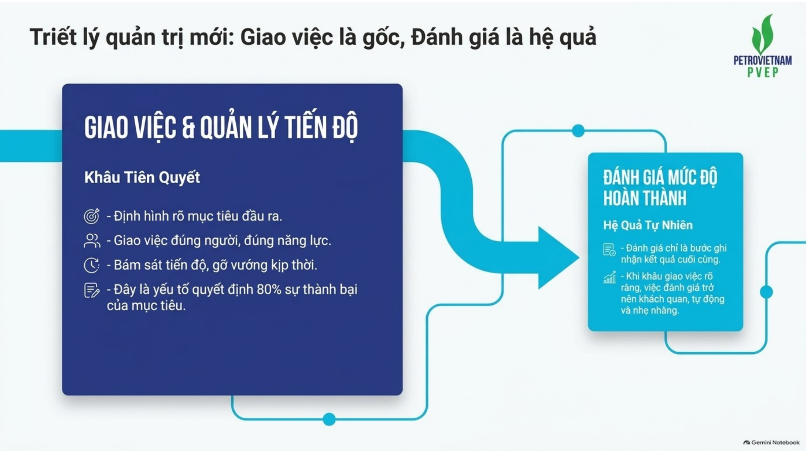
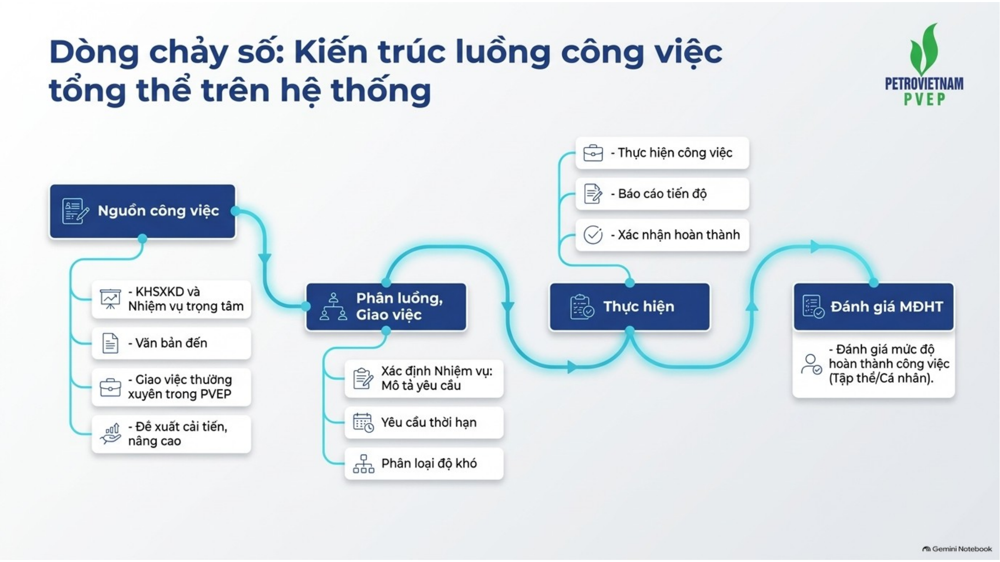
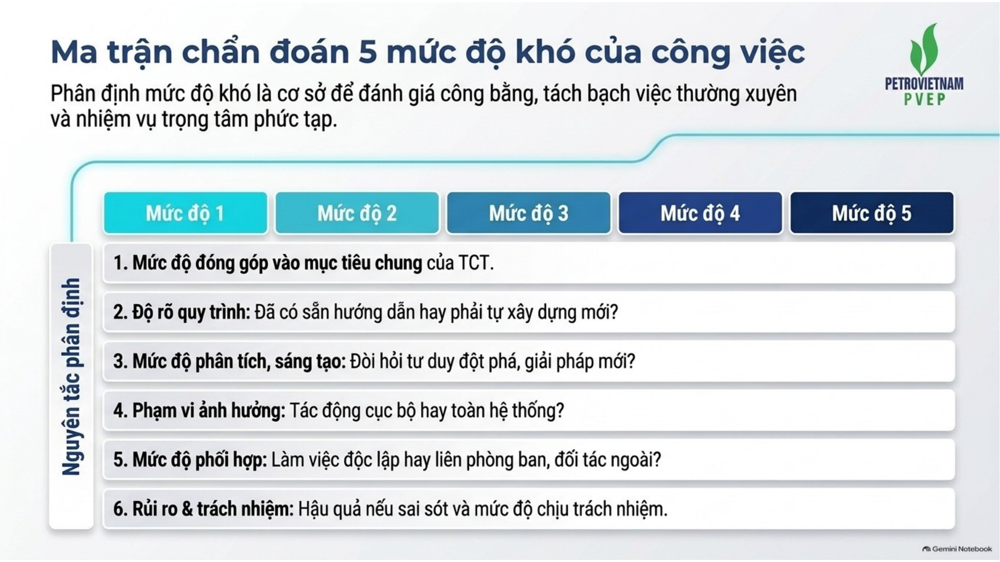
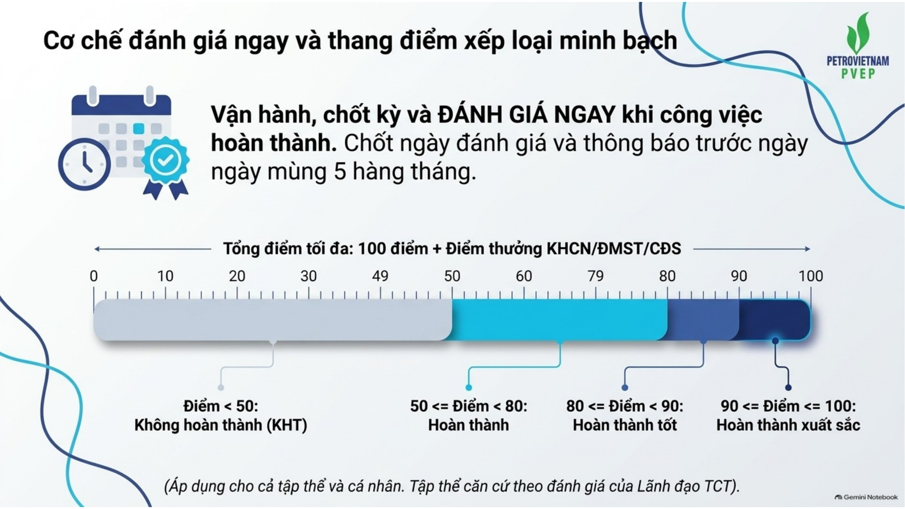
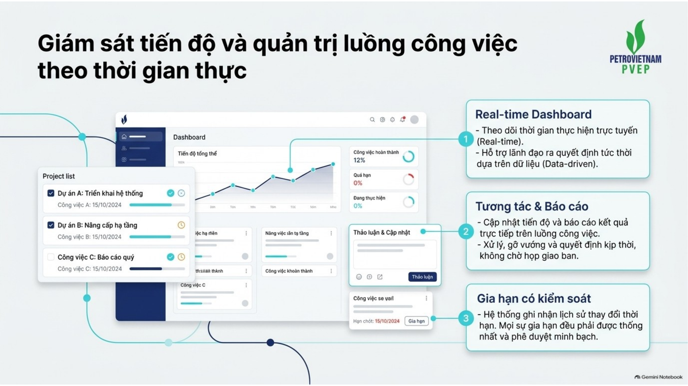
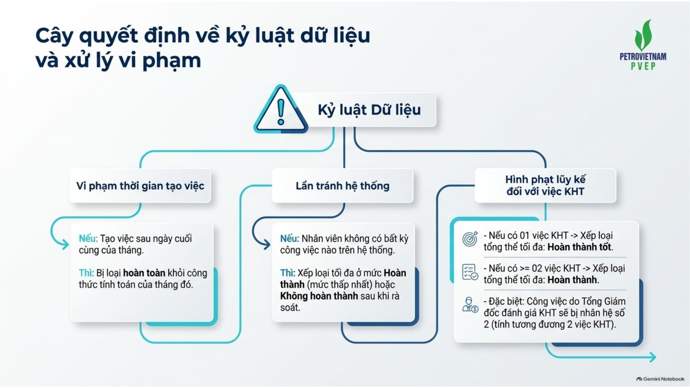
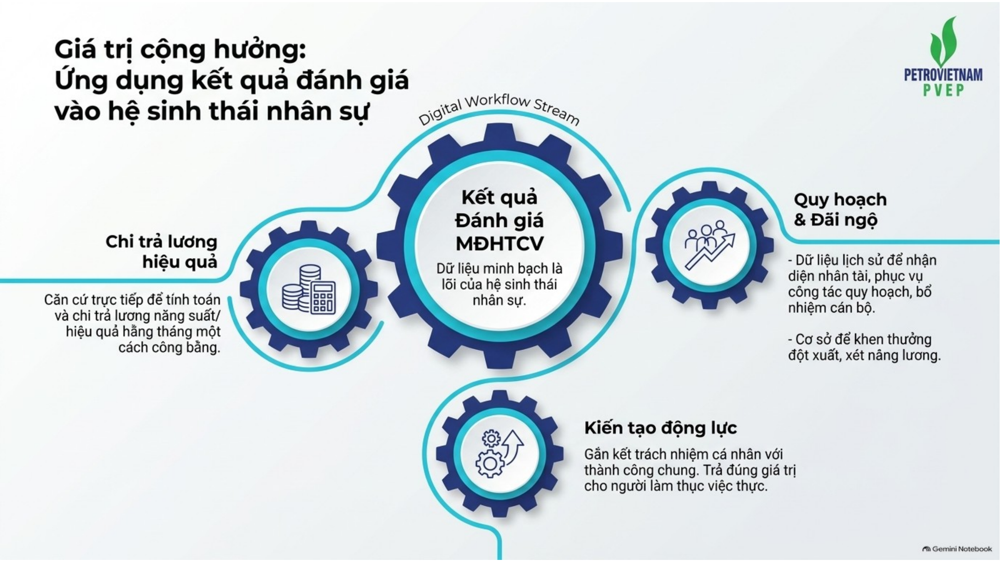
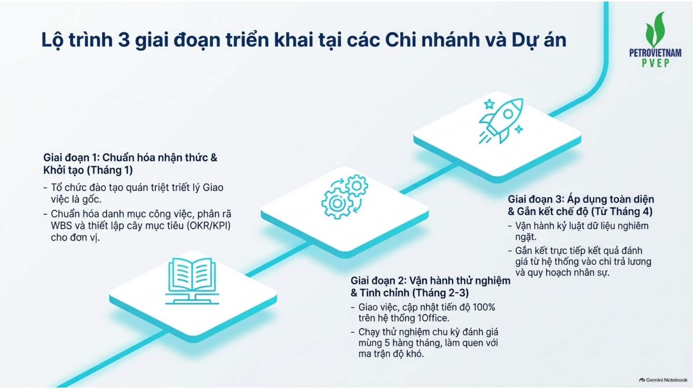
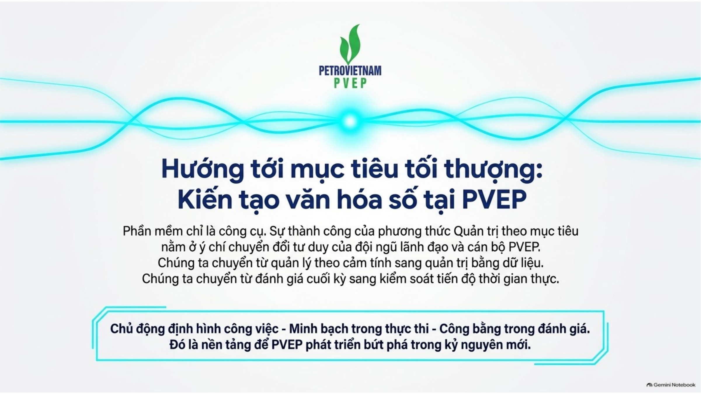

Đánh giá mức độ hoàn thành công việc
Hướng dẫn thống nhất cách quản trị công việc và đánh giá kết quả trên nền tảng số.
Đánh giá không phải một thao tác cuối kỳ. Đó là kết quả của cả quá trình quản trị công việc.
Hoàn thành chuẩn bị để thực thi từ ngày 01/01/2027
Các Chi nhánh và Dự án triển khai thống nhất từ xác định mục tiêu, giao việc, phân định mức độ khó, cập nhật tiến độ đến đánh giá kết quả.
Chuẩn hóa cách làm, dữ liệu, đầu mối quản trị và hướng dẫn người sử dụng để sẵn sàng vận hành thực chất.
Thống nhất cách làm
Cùng nguyên tắc xác định công việc, thời hạn, đầu ra và mức độ khó.
Sẵn sàng hệ thống
Người dùng, phân quyền, đầu mối và dữ liệu cần thiết.
Sẵn sàng tổ chức
Lãnh đạo chỉ đạo trực tiếp, cấp quản lý giao việc đúng chuẩn.
Đồng bộ không chỉ là cùng dùng một phần mềm
Lãnh đạo đơn vị
Chỉ đạo triển khai và chịu trách nhiệm về chất lượng vận hành.
Cấp quản lý
Chuyển mục tiêu thành công việc có đầu ra, hạn và mức khó.
Người thực hiện
Cập nhật tiến độ, kết quả và bằng chứng trong quá trình làm việc.
Đầu mối quản trị
Hướng dẫn, kiểm soát dữ liệu và hỗ trợ vận hành.
Từ mục tiêu chung đến kết quả có thể đo lường
Mục tiêu
Mục tiêu của Tổng công ty và đơn vị được cụ thể hóa.
Công việc
Có người chịu trách nhiệm, đầu ra, thời hạn và mức độ khó.
Thực hiện
Tiến độ và kết quả được cập nhật trong quá trình làm việc.
Đánh giá
Dựa trên dữ liệu, sản phẩm và kết quả thực tế.
Giao việc là điểm khởi đầu, đánh giá là hệ quả
Biết công việc phục vụ kết quả nào.
Biết sản phẩm cần bàn giao.
Biết ai chịu trách nhiệm chính.
Biết khi nào phải xong và yêu cầu công việc.
ĐÁNH GIÁ CÓ CĂN CỨ
Khối lượng, tiến độ, chất lượng và phối hợp hoặc ý thức được hình thành từ dữ liệu của chính quá trình thực hiện.

Bốn góc nhìn tạo thành một kết quả đánh giá toàn diện
Khối lượng
Đã hoàn thành bao nhiêu.
Tiến độ
Hoàn thành khi nào.
Chất lượng
Kết quả đạt mức nào.
Phối hợp / Ý thức
Cách tổ chức và thực hiện.
Cùng bốn tiêu chí, khác góc nhìn ở tiêu chí thứ tư
Phối hợp
Chủ động phối hợp, trao đổi thông tin, hỗ trợ và xử lý công việc giữa các đơn vị.
Ý thức và trách nhiệm
Chủ động, trách nhiệm, chấp hành và phối hợp trong quá trình thực hiện nhiệm vụ.
Công việc là đơn vị tính điểm cơ bản
Công việc lớn
Có thể chia thành các giai đoạn độc lập khi mỗi giai đoạn có sản phẩm và mốc thời gian rõ.
Công việc phát sinh
Ghi nhận khi phát sinh thực tế ngoài kế hoạch và có đủ căn cứ.
Văn bản đến
Chỉ là công việc khi tạo ra yêu cầu phải thực hiện hành động hoặc sản phẩm cụ thể.
Công việc hình thành từ các nguồn quản trị rõ ràng
CÔNG VIỆCChuyển thành nhiệm vụ có đầu ra và trách nhiệm

Mức độ khó được xem xét tổng thể trên 6 yếu tố
KHÓ
1 — 5
Không xác định đơn thuần theo thời gian thực hiện, số người tham gia hoặc khối lượng tài liệu.

Từ công việc thường xuyên đến công việc trọng yếu
Thường xuyên
Quy trình rõ, phạm vi hẹp, rủi ro thấp.
Có hướng dẫn
Chủ động thực hiện, có tình huống đơn giản.
Tổng hợp
Cần phân tích, phối hợp và xử lý nhiều thông tin.
Liên đơn vị
Ảnh hưởng rộng, điều phối nhiều đầu mối.
Trọng yếu
Ảnh hưởng lớn, yêu cầu giải pháp tổng thể hoặc chưa có tiền lệ.
Trọng số phản ánh cơ cấu và giá trị của nhóm công việc
80·10·10
Tập thể
70·30
Cá nhân

Mỗi tiêu chí trả lời một câu hỏi quản trị khác nhau
Khối lượng
Trong từng nhóm công việc, tỷ lệ hoàn thành là bao nhiêu?
Tiến độ
Công việc hoàn thành đúng hạn hay chậm hạn?
Chất lượng
Sản phẩm đáp ứng yêu cầu đến mức nào?
Phối hợp / Ý thức
Cách thực hiện có chủ động và trách nhiệm không?
Hai tiêu chí độc lập, không dùng tiêu chí này thay cho tiêu chí kia
Đánh giá sản phẩm đầu ra
Độ chính xác, đầy đủ, mức đáp ứng yêu cầu và khả năng sử dụng thực tế.
Đánh giá theo thời hạn
Đúng hoặc sớm hạn có hệ số 1. Chậm hạn thì hệ số giảm theo số ngày chậm.
Ý thức bắt đầu từ 25 điểm và giảm khi có vi phạm
Chủ động và trách nhiệm
Không tránh né, đùn đẩy hoặc làm việc qua loa ảnh hưởng kết quả.
Chấp hành chế độ làm việc
Thời gian làm việc, nghỉ phép và việc chấp hành quy định được ghi nhận.
Vi phạm nghiêm trọng
Có thể dẫn tới điểm ý thức bằng 0 và ảnh hưởng trực tiếp xếp loại.
Điểm tổng không phải điều kiện duy nhất quyết định xếp loại
Tối đa Hoàn thành tốt
Một công việc không hoàn thành tạo giới hạn mức xếp loại.
Tối đa Hoàn thành
Từ hai công việc không hoàn thành áp dụng giới hạn thấp hơn.
Quy đổi 02 KHT
Công việc do Tổng Giám đốc đánh giá KHT được quy đổi tương đương hai công việc KHT.
Quản trị công việc là một dòng chảy liên tục
Nguồn việc
Kế hoạch, chỉ đạo, văn bản, cải tiến
Giao việc
Người thực hiện, hạn, đầu ra, mức khó
Theo dõi
Tiến độ, vướng mắc, thay đổi
Hoàn thành
Sản phẩm và bằng chứng
Đánh giá
Khối lượng, tiến độ, chất lượng
Tổng hợp
Dashboard và dữ liệu quản trị
Mỗi cấp có một vai trò rõ trong chu trình
Lãnh đạo TCT
Định hướng, giao nhiệm vụ trọng yếu và quyết định theo thẩm quyền.
Lãnh đạo đơn vị
Phân bổ, theo dõi, đánh giá và xử lý vướng mắc.
Người lao động
Thực hiện, cập nhật và cung cấp bằng chứng.
Ban QTNNL
Hướng dẫn, kiểm tra, tổng hợp và tham mưu.

Hệ thống ghi nhận cả quá trình thực hiện
Người thực hiện cập nhật tiến độ và kết quả. Cấp quản lý theo dõi dữ liệu, xử lý vướng mắc và đánh giá khi công việc hoàn thành.
Giao việc
Đủ đầu ra, hạn, nhóm việc, mức khó.
Thực hiện
Cập nhật tiến độ và bằng chứng.
Quản trị
Nhận diện công việc cần xử lý.


Dữ liệu công việc phục vụ điều hành
Dashboard giúp cấp quản lý nhìn thấy trạng thái, tiến độ và các công việc cần quan tâm thay vì chờ báo cáo cuối kỳ.

ĐGMĐHTCV là một phần của hệ thống quản trị số PVEP
ĐƯỢC SỐ HÓA

Từ đánh giá kết quả đến hỗ trợ điều hành và cải tiến
Nhìn thấy
Khối lượng, trạng thái, tiến độ và điểm nghẽn.
Điều hành
Can thiệp sớm và phân bổ nguồn lực phù hợp.
Cải tiến
Dùng dữ liệu tích lũy để nâng hiệu quả tổ chức công việc.
Từ cách làm cũ đến văn hóa quản trị theo mục tiêu

Văn hóa mới được thể hiện trong hành vi hằng ngày
Trước khi giao
Làm rõ mục tiêu, đầu ra, trách nhiệm, hạn và mức khó.
Trong khi làm
Cập nhật tiến độ, phản ánh vướng mắc, chủ động phối hợp.
Khi hoàn thành
Nộp sản phẩm và bằng chứng kết quả.
Khi đánh giá
Dựa trên dữ liệu và kết quả thực tế.
Tất cả vì Mục tiêu chung
Mỗi mục tiêu được chuyển thành công việc rõ ràng. Mỗi công việc gắn với trách nhiệm cụ thể. Mỗi kết quả được ghi nhận bằng dữ liệu. Từng cá nhân và từng đơn vị cùng hướng tới kết quả chung của PVEP.
